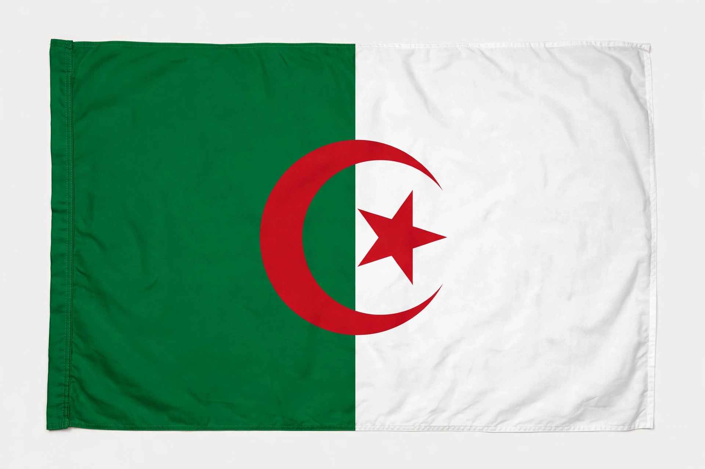

The National Liberation Front (French: Front de libération nationale, FLN; Arabic: جبهة التحرير الوطني) is a nationalist political party in Algeria. It was the principal nationalist movement during the Algerian War of Independence (1954–1962) and the sole legal party in Algeria from independence in 1962 until the introduction of a multiparty system in 1989. Its armed wing during the war was the National Liberation Army (ALN).
| National Liberation Front | |
|---|---|
 Flag of the FLN, green and white with a red crescent and star Flag of the FLN | |
| Founded | 1 November 1954 |
| Headquarters | Algiers, Algeria |
| Ideology | Algerian nationalism, Arab socialism (historically) |
| Armed wing | National Liberation Army (ALN), 1954–1962 |
| Colours | Green, white, red |
The FLN was founded on 1 November 1954 by the Revolutionary Committee of Unity and Action (CRUA), a group of younger militants who had broken with Messali Hadj's older nationalist movement. On the night of 31 October – 1 November 1954 — "Red All Saints' Day" (Toussaint Rouge) — FLN fighters launched coordinated attacks across Algeria, opening the war against French rule. A proclamation issued in the name of the FLN called for the restoration of a sovereign Algerian state. The organisation's historic founders, later mythologised as the chefs historiques, included Ahmed Ben Bella, Hocine Aït Ahmed, Larbi Ben M'hidi, Mohamed Boudiaf, Rabah Bitat, Mostefa Ben Boulaïd, Mourad Didouche, Krim Belkacem, and Mohamed Khider.
At the Soummam Congress of August 1956 the FLN reorganised its leadership and affirmed the primacy of the political over the military. Its urban networks fought the Battle of Algiers in 1956–57 against French paratroopers under General Jacques Massu. In September 1958 the FLN proclaimed a Provisional Government of the Algerian Republic (GPRA) in exile. The Évian Accords of March 1962 ended the war, and Algeria became independent on 5 July 1962 following a referendum in which the FLN campaigned for independence.
Under President Ahmed Ben Bella and, after the 1965 coup, under Houari Boumédiène, the FLN became the framework of a one-party socialist state, overseeing nationalisations and agrarian reform. Boumédiène's successor Chadli Bendjedid introduced economic liberalisation in the 1980s. Riots in October 1988 forced constitutional reform; the 1989 constitution ended the FLN's monopoly. The party lost ground to the Islamic Salvation Front (FIS) in 1990–91, and after the army cancelled elections in January 1992 Algeria descended into civil war.
The FLN returned to government coalitions in the late 1990s and, under Secretary-General Abdelaziz Bouteflika (president from 1999 to 2019), was again the largest party in parliament for much of the 2000s and 2010s. It was damaged by the Hirak protest movement of 2019, which forced Bouteflika's resignation, and its parliamentary strength fell sharply in the 2021 elections, though it remained a significant party within the political system.
Categories: Political parties in Algeria · Algerian War · National liberation movements